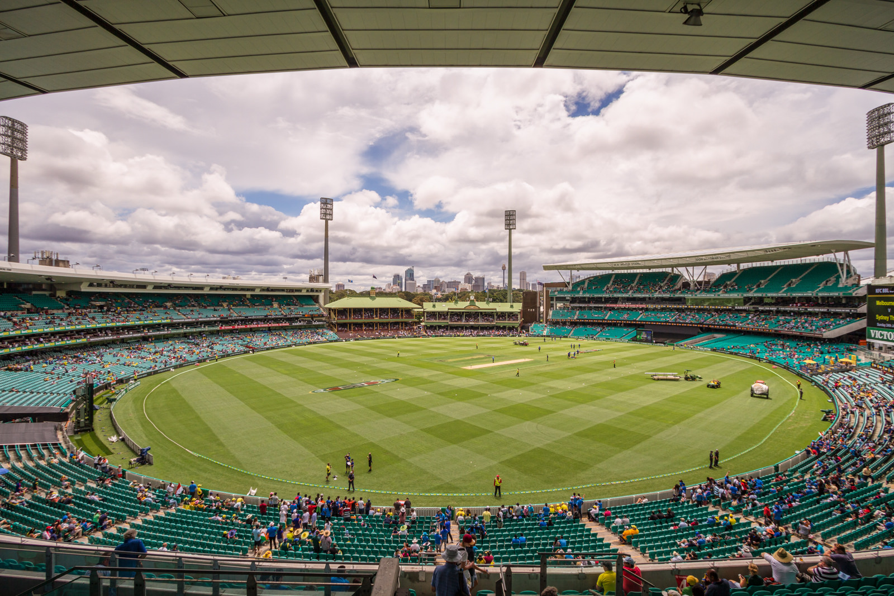
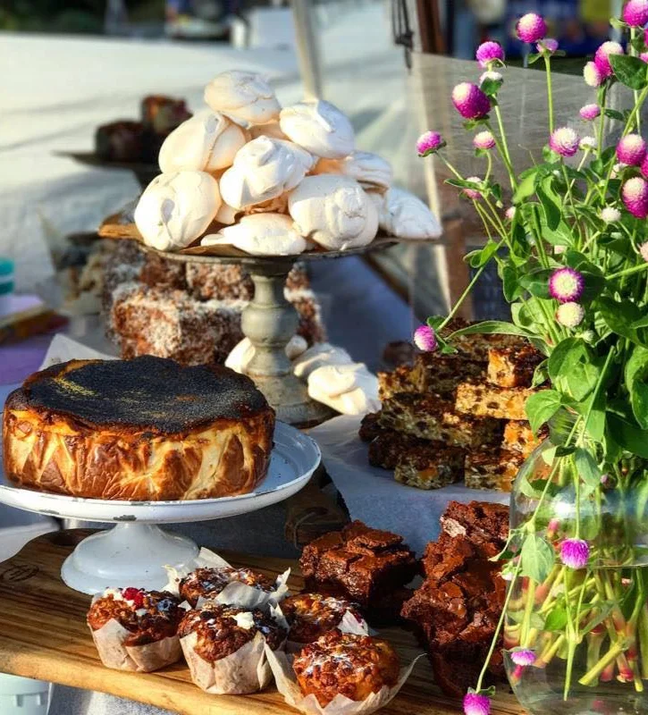
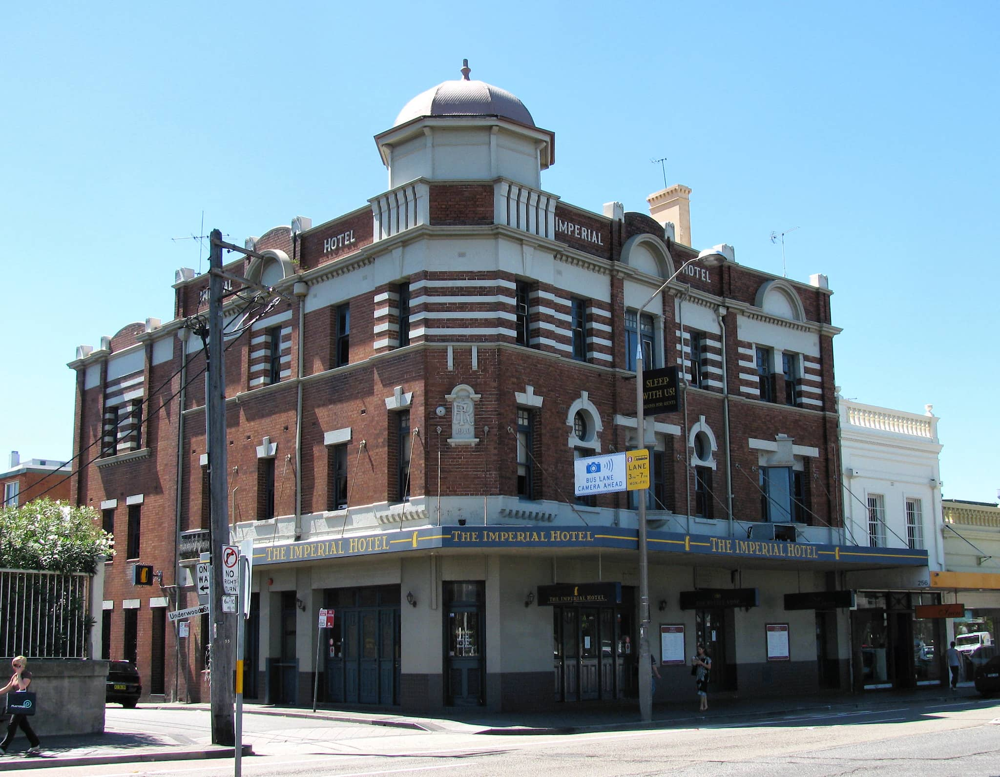

Sydney Cricket Ground
Paddington Reservoir Gardens is conveniently situated in Sydney's vibrant inner east, nestled between the charming Paddington neighborhood and the historic suburb of Woollahra. Easily accessible by public transport, the Gardens are just a short walk from local bus stops, making it simple to visit from anywhere in the city. Explore the surrounding area, where you’ll find boutique shops, cafés, and cultural attractions, all within close proximity.


